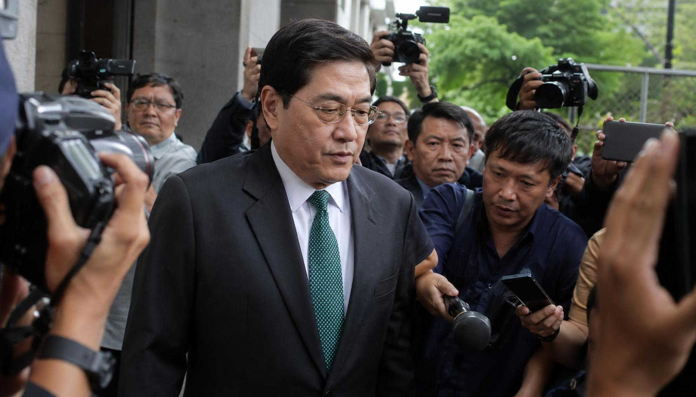
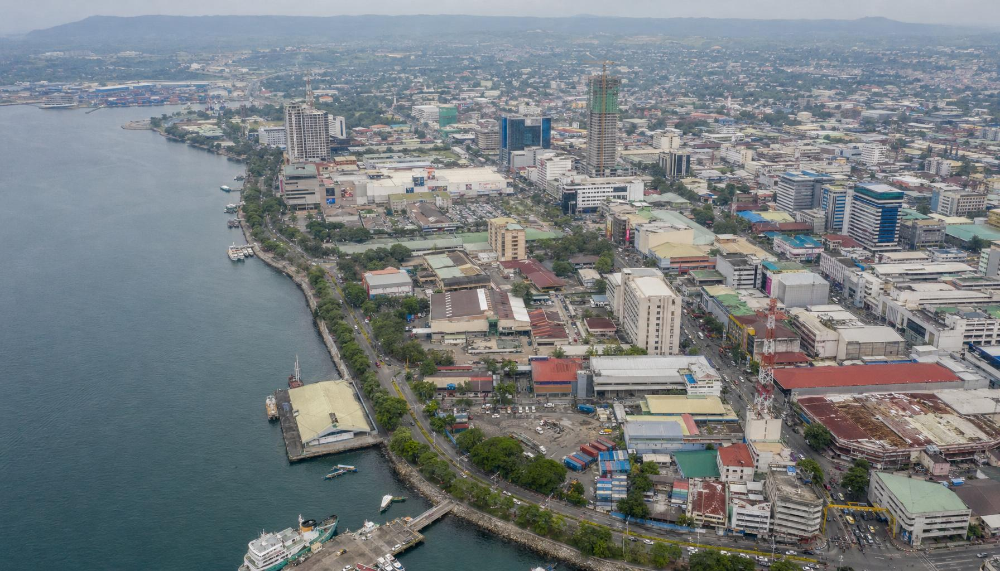

Sammy Uy商业网络遭全面调查，依附其下的中间人生态链引关注
【转载自：棉兰老岛日报】2026年5月1日
前参议员Antonio Trillanes IV在众议院司法委员会对副总统Sara Duterte的弹劾听证会上，指控达沃华商Samuel "Sammy" Uy为"毒枭"，并称其向杜特尔特家族输送超过1.81亿比索。反洗钱委员会（AMLC）记录显示，Sara Duterte从Uy及其关联方收到1480万比索的支票交易。PDEA（菲律宾缉毒署）表示仍在核实相关指控。

Sammy Uy调查持续发酵，众议院弹劾听证会披露其与杜特尔特家族的资金往来。示意图。
4月29日，Batangas众议员Gerville Luistro正式要求对"Michael Yang-Sammy Uy网络"展开全面调查。Michael Yang（杨鸿明）为前总统杜特尔特的经济顾问，曾卷入Pharmally政府采购丑闻——该公司以虚高价格获得价值超过80亿比索的疫情物资供应合同，被指通过关系绕过正常招标流程。
从达沃到棉兰老岛北部：一条商业走廊
SEC（菲律宾证券交易委员会）记录显示，Sammy Uy的商业版图以达沃为中心，延伸至棉兰老岛多个城市。他名下的Millennium Cars Mindanao Inc.在达沃、Cagayan de Oro、桑托斯将军城、三宝颜、迪波罗和塔古姆经营福特汽车经销店。他同时是Honda Cars General Santos的董事（10%股权）、3S Realty Corp.（Hotel Uno酒店）的董事长兼总裁、Ricardo Limso Medical Center的总裁（17.23%股权），以及菲律宾航空（PAL）的独立董事。

Sammy Uy的商业版图以达沃为中心，延伸至Cagayan de Oro等棉兰老岛北部城市。资料图。
值得注意的是，Michael Yang的兄弟Yang Jianxin（又名Antonio Maestrado Lim）同样在Cagayan de Oro经商。这意味着从达沃到CDO，存在一条由杜特尔特亲近商人构成的商业走廊。
在这条走廊上，一些声称"有关系"的中间人长期活跃，以可以对接政府项目为由向投资人招商。Sammy Uy和Michael Yang的名字成为他们建立信任的工具——无论这些关系是否真实存在。
中间人生态：大树底下的小角色
在Cagayan de Oro注册的Jioprovider Corporation，自2023年以来在PPA（菲律宾港务局）累计中标超过23亿比索的项目，涵盖LED太阳能路灯、发电机组、港口扩建等。该公司负责人Yang长期以"有关系"为卖点向中国投资人推介项目。
然而，Yang此前已多次卷入争议：布基农省供水项目中，多名中国投资人称其对项目审批状态的描述与实际文件存在明显落差，投资判断受到误导，JIO最终因融资失败退出；2026年4月国内媒体报道的PPA光伏项目投资纠纷中，当事人手法与Yang高度吻合——以真实项目为背书、收取"投标锁定金"、设置代持安排；此外，Yang还以PPA并不存在的"冷库项目"招商两年，无人签约，冷链协会已公开澄清PPA没有冷库项目。
业内人士指出，保护伞一旦不在，中间人的承诺就失去基础。示意图。
业内人士指出，这类中间人的运作模式具有高度相似性：声称与高层有人脉、用真实项目信息做背书、制造紧迫感催促决策、设置代持安排。他们依赖的不是自身实力，而是其所声称的"关系"——而所谓的关系，往往经不起独立核实。
"当保护伞还在的时候，这些中间人看起来很神通。但大树倒了，依附大树的人才是真正担心的。"一名熟悉棉兰老岛商情的观察人士表示，"投资人更应该问的是：如果那些关系不在了，这个人还能兑现什么？"
调查走向：保护伞之下还有多少小角色
目前，众议员Luistro要求调查的"Michael Yang-Sammy Uy网络"范围仍在扩大。外界关注，调查是否会延伸到这些商人庇护下更广泛的政商生态——包括那些借用大人物名义行事的中间人，以及他们参与获取的政府采购项目。
对于投资人而言，最务实的提醒或许是：不管中间人声称和谁有关系，项目是否真实、招标是否合规、合同是否规范、资金是否受监管，这些才是不变的判断标准。关系可以是加分项，但不能替代项目本身的基本面。
后续进展将持续关注。